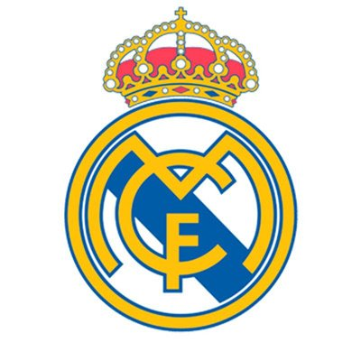
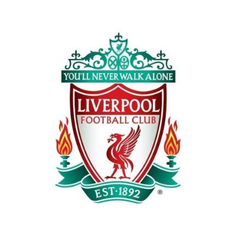
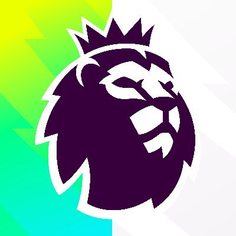

khalid osman
@c.x.9_
more_horiz
- image
- gif_box
- poll
- sentiment_satisfied
- event
Elon musk
@elonmusk_ .1h
more_horiz
Musk also meant the data that the Fed is receiving is actually behind the curve of what is actually happening in the current scenario. For example, according Huduser.gov, the primary source for American federal government reports and information, the national employment numbers are released following a 1-month delay. Similarly, there are other statistics which have a supposed delay or in Elon Musk’s words, 'latency', in their numbers, that are used by Fed to determine the rate hikes. “ Elon's Tweet "

cristiano ronaldo
@ronaldo_ .2h
more_horiz
15 years of partnership with CLEAR MEN & we never stop improving. The world’s #1 men shampoo just got better.

Real madrid
@realmadrid_ .1h
more_horiz
😏 SIUUUU 🏆 1️⃣2️⃣ 🏆

Fabrizo romario_
@romario_ .6h
more_horiz
Cristiano Ronaldo to Manchester United: HERE WE GO! Done deal between Juventus and Man United on permanent move. Cristiano has accepted the contract proposal from Manchester United and he’s coming back. 🔴🇵🇹 #MUFC #Ronaldo Medical to be scheduled soon. CR7 IS BACK. Here we go.
David Ornstein
@David_Ornstein_ .1h
more_horiz
🚨 EXCLUSIVE: Arsenal have tonight submitted a massive offer to West Ham for England midfielder Declan Rice. Proposal is for £100m + £5m in add-ons - would be a record for a British player as #AFC try to agree deal with #WHUFC for top target @TheAthleticFC

UEFA Champions League
@ChampionsLeague_ .4y
more_horiz
Ronaldo: "We've not had dinner together yet, but I hope in the future!" 😃 @Cristiano & Messi at the #UCLdraw 🤜🤛

Man united
@manunited_ .10h
more_horiz
Cristiano Ronaldo is to leave Manchester United by mutual agreement, with immediate effect. The club thanks him for his immense contribution across two spells at Old Trafford.

Liverpool
@liverpool_ .1h
more_horiz
Official Twitter account of Liverpool Football Club 🔴 Stop The Hate, Report It. #RedTogether ✊ @LFCHelp 💻

Premierleague
@premierleague .1h
more_horiz
The official account of the Premier League 📱 @OfficialFPL | @PLforIndia | @PLinUSA | @PLinArabic Join us on YouTube http://youtube.com/premierleague
what's happening
Trending in somalia
more_horiz
khlid osman
101m tweets
Trending in america
more_horiz
maria
222m tweets
Trending in egypt
more_horiz
mohamed salah
770k tweets
Trending in holland
more_horiz
de jong
11m tweets
Trending in portugal
more_horiz
ronaldo
111m tweets
Trending in argentina
more_horiz
leo messi
101k tweets